Perfiles y eficiencia
Los siete perfiles simulados como lentes sobre lo que hay hoy, el texto grande, el iPad, lo medido y lo supuesto sobre rendimiento, y los hallazgos que no llegan a problema prioritario.
Lente de perfiles sobre lo de hoy
Perfiles simulados, no entrevistas Riesgo de que ese perfil se trabe en esa parte. alto · medio · bajo.
| Perfil | 1 · Encontrar un ajuste | 2 · Filas que no son lo que dicen | 3 · Entender Pro | 4 · Exportar | 5 · Pedir ayuda | 6 · Dos «modos» | 7 · Texto grande |
|---|---|---|---|---|---|---|---|
| P1 · Migrante de Excel Quiere su mes en Excel para el contador y saber qué pierde si no paga. | lo busca en «Personalización» | busca presupuestos ahí | quiere ver el límite | quiere su mes en Excel | lee las preguntas | — | — |
| P2 · Principiante abrumado No sabe qué es «Personalización», «Organización» ni qué le da Pro. | no sabe qué es Personalización | no entiende las estrellas | precio sin saber qué es | «Mostrar solo / Ocultar» | no encuentra su duda | dos nombres iguales | — |
| P3 · Anotador rápido que no lee Usa «Solo gastos»; no baja por 31 filas ni lee subtítulos. | no lee 31 filas | salta de pestaña | no baja hasta las baldosas | exporta «Todo» | no baja hasta Ayuda | su modo, escondido | — |
| P4 · Experto de otra app Espera un buscador en Ajustes, una tabla Gratis/Pro y exportar por tipo. | echa de menos buscar | dos «Presupuestos» | busca la tabla | falta tipo | — | — | — |
| P5 · Llega por una invitación de grupo Vive en «Solo grupos»; ve una lista de Ajustes más corta. | ve pocas filas | no los ve | ¿Grupos es de pago? | exporta grupos aparte | Ayuda al fondo | — | — |
| P6 · Varias monedas y tarjeta Cambia el formato de la moneda y choca con el límite de 4 cuentas. | formato escondido | — | ¿cuántas cuentas? | ¿monedas? | — | — | — |
| P7 · Texto grande, a veces en iPad Texto de accesibilidad, VoiceOver; listas largas y teclear le cuestan. | 4 pantallas, más con AX | pierde el sitio | pantalla larga | 3 pantallas de filtros | sin Mail no escribe | — | palabras partidas |
Texto grande (AX3)
Lo que falla con texto grande va al problema 7 (palabras partidas, iconos que no crecen, lista larguísima). Además: el botón de Exportar corta su texto («Exportar 2,342 reg…»), las tarjetas de Más cortan los subtítulos y en Yala Pro «Qué incluye Pro» queda a cuatro o más pantallas. Preguntas frecuentes, interruptores y Vaciar datos parten bien.
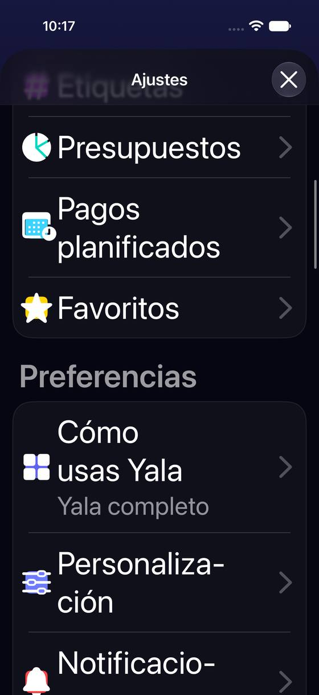
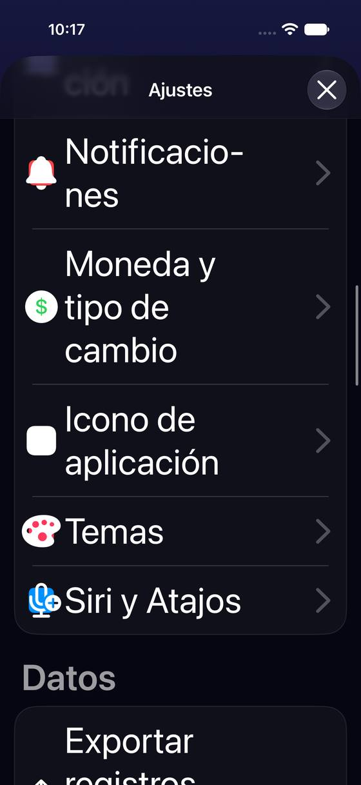
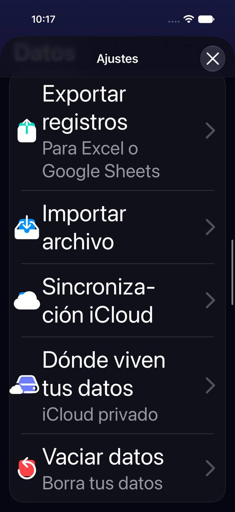
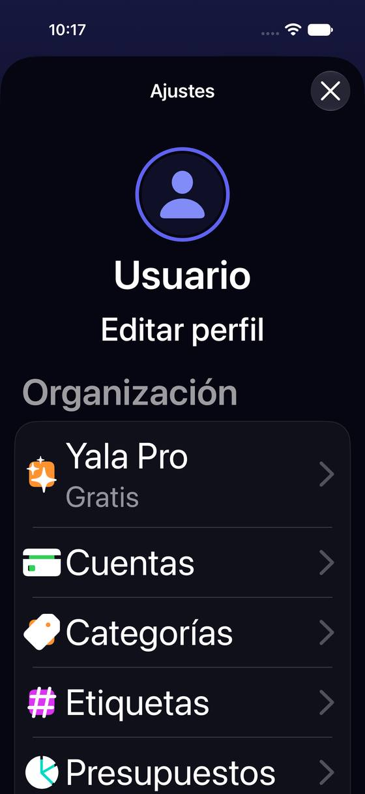
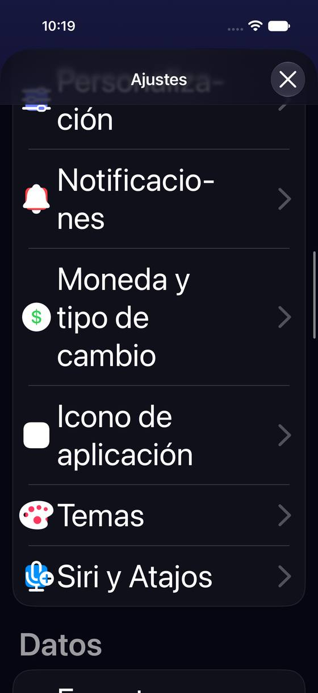
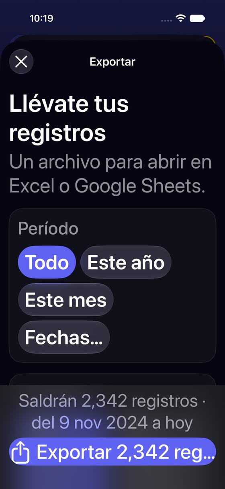
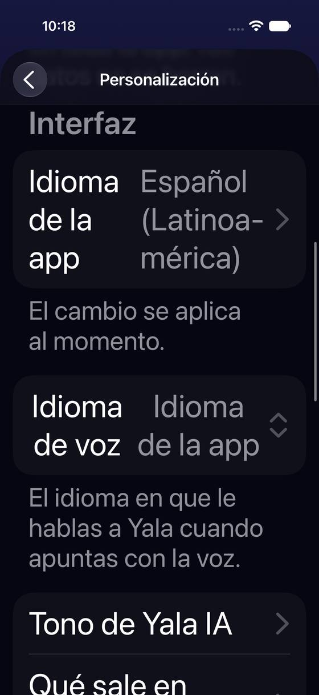
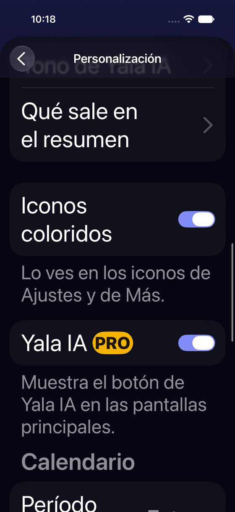
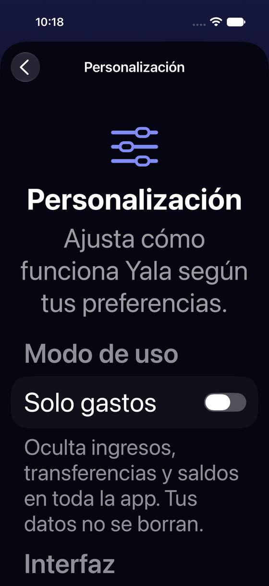
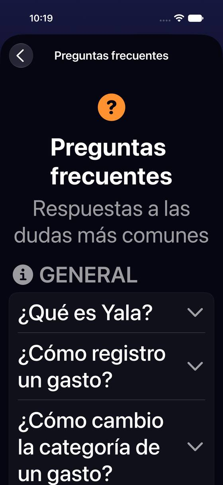
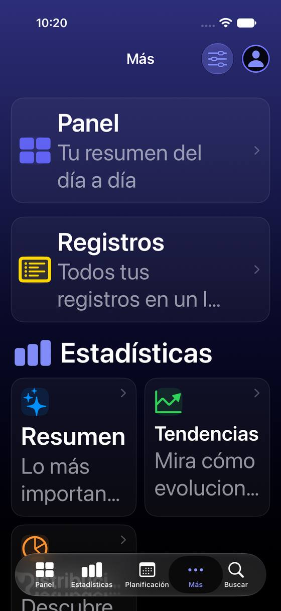
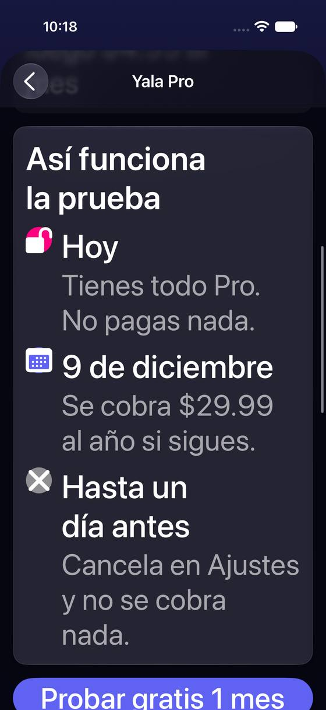
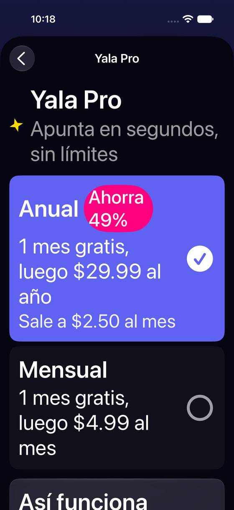
iPad
En el iPad Pro 13 Ajustes es lista y detalle: la lista de 31 filas sigue igual de larga, pero lo elegido se ve al lado y no hace falta volver atrás. Exportar sale en una hoja centrada que tapa los dos lados. La lista estrecha a la izquierda con un detalle muy ancho deja mucho aire en Personalización y Pro. Ya hay una card abierta sobre el tamaño de la hoja de Ajustes en el iPad («En iPad, Ajustes puede no salir con lista y ajuste lado a lado según desde dónde lo abras»).
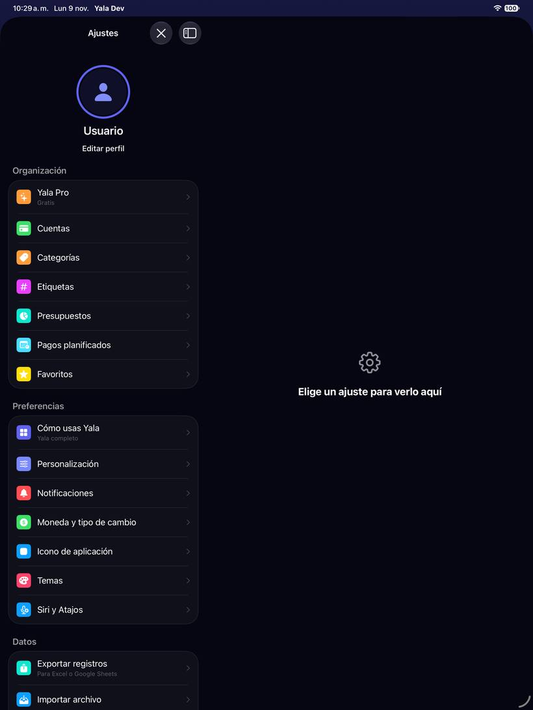
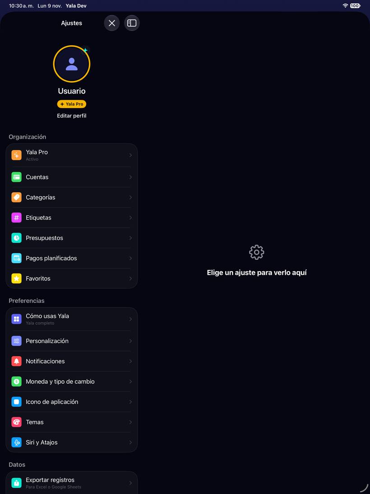
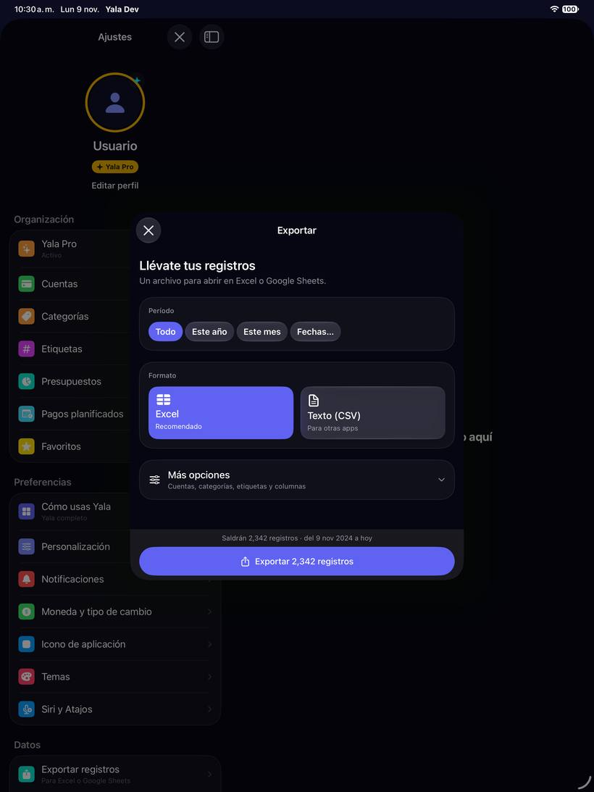
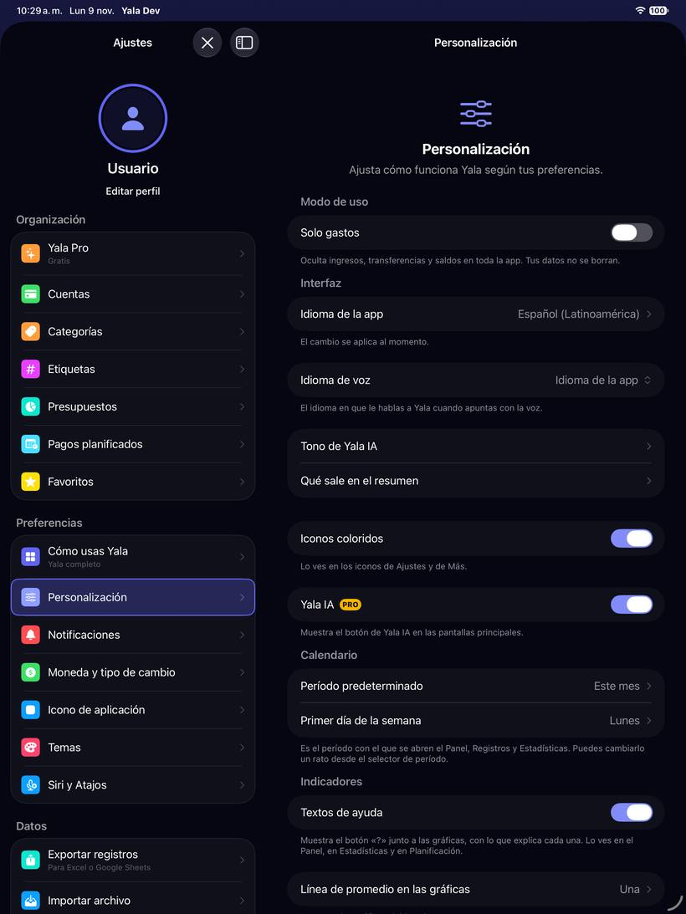
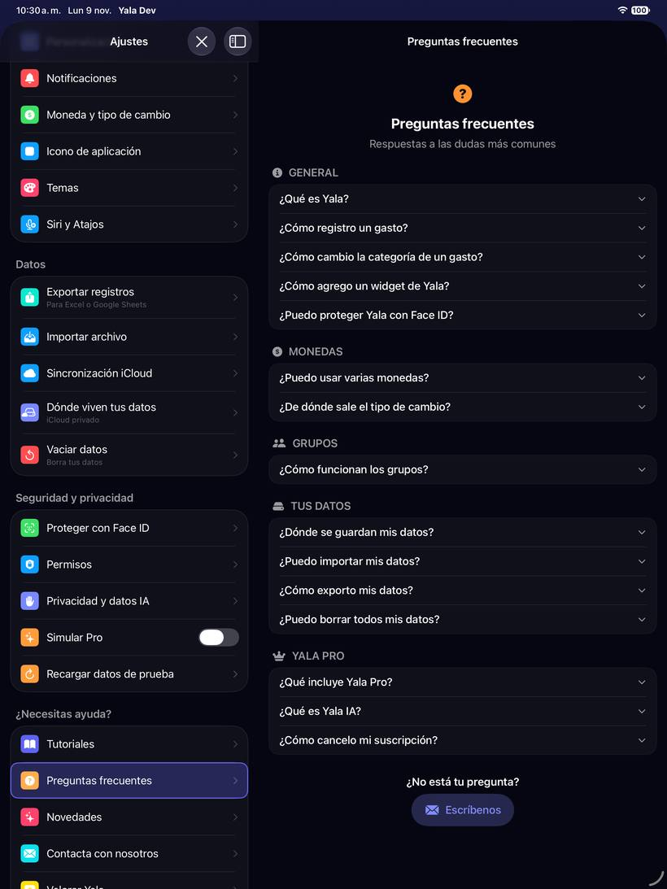
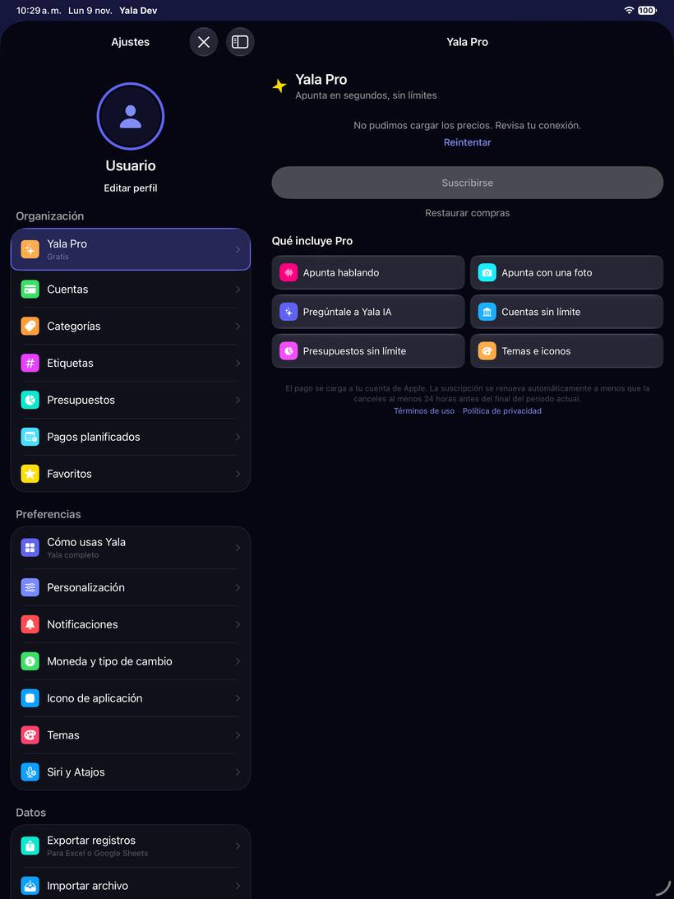
Eficiencia: lo medido
| Qué | Cifra | Cómo se midió |
|---|---|---|
| Abrir Ajustes desde el Panel, sin registros (semilla «sin-registros») | 130 ms de mediana (129,6-139,4; la primera, 432) | Marca PERF ajustes de la app (LoadTimeMarks: empieza al tocar el avatar y acaba en el onAppear de la lista), leída del registro del simulador. 7 aperturas seguidas en el mismo arranque. |
| Lo mismo con dos años de registros (semilla «realista», 2.342) | 345 ms de mediana (340,2-348,9; la primera, 644) | Igual. |
| Lo mismo con diez años de registros (semilla «pesado») | ~1.020 ms (1.017-1.024; la primera, 1.950) | Igual. Crece con los registros aunque Ajustes solo cuenta cuántos hay (fetchCount). |
| Abrir Ajustes desde Más (sin el Panel delante), dos años | 216 ms de mediana (198-219; la primera, 522) | La misma marca, tocando el avatar de Más. Separa lo que cuesta el Panel al presentar la hoja. |
| Lo mismo desde Más, diez años | ~470 ms de mediana (465-485; la primera, 765) | Igual. Desde Más cuesta la mitad, pero también crece con los registros: una parte es del Panel y otra de lo que comparten (la hoja de Ajustes o las páginas que siguen montadas debajo). |
| Largo de la lista de Ajustes | 4 pantallas a tamaño normal, 8 con AX3 | Deslizamientos iguales hasta que dos capturas seguidas no cambian: 3 a tamaño normal y 7 con AX3 (iPhone 17 Pro). |
Todo en Debug y en el simulador, que no es un iPhone en Release: sirve para comparar volúmenes, no como tiempo real.
Eficiencia: hipótesis (sin medir)
Hipótesis Leído en el código. Ninguna es un refactor propuesto: son sitios a medir.
| Qué pasa | Dónde | Qué se espera y qué medir |
|---|---|---|
Abrir Ajustes cuesta más cuantos más registros hay, y Ajustes no lee registros salvo un fetchCount. Desde Más cuesta la mitad que desde el Panel (medido), así que una parte es del Panel al presentar la hoja; la otra crece igual y está en algo común: la hoja de Ajustes o las seis páginas que siguen montadas debajo y se repintan. | ProfileViewModel.loadData; LoadTimeMarks.begin(.settings) en ProfileToolbarButton; MainTabView monta las seis páginas (RootTabLayoutLogic.mountedTabs) | Instruments (SwiftUI + Time Profiler) en el iPhone 14 con la semilla «pesado», abriendo desde el Panel y desde Más. Encaja con la card de Sentry «La app se traba en Perfil (App Hang)», que culpa a ProfileView.listColumn. |
| Exportar recuenta en cada cambio de filtro leyendo todos los registros del período y filtrando en memoria, en el hilo principal (con una pausa de 150 ms entre toques). | ExportRecordsView.recount (líneas 815-829), TransactionsExportService.matchingCount (560-576) | Con «Todo» y diez años, cada chip puede tardar como abrir Ajustes. Medir con una marca alrededor de matchingCount. |
El cuerpo de Ajustes lee en cada pintado varias banderas que no son observables (StorageModePersistence.read(), CloudMigrationController.shared, WhatsNewConfig.current). | ProfileView.datosSection y ayudaSection | Bajo: lecturas de UserDefaults. Solo importa si el cuerpo se repinta mucho (no medido). |
| El muro de Pro pide los productos a la App Store cada vez que se abre. | SubscriptionView / ProPaywallBody | En un iPhone real, con red lenta, el primer pintado sale sin precios; ya tiene estado de error con «Reintentar» (captura r09). |
Hallazgos secundarios
No llegan a problema prioritario (o ya van dentro de uno). Severidad: alta · media · baja.
| Hallazgo | Evidencia | |
|---|---|---|
| La cabecera «Usuario / Editar perfil» ocupa media pantalla y solo edita el nombre y la foto; el nombre por defecto es «Usuario». | Capturas a01 y p01 | |
| «Más sobre tus datos» en Detalles personales abre una web: sin conexión no explica nada. | Captura p02 (cargando a los 5 s) | |
| Proteger con Face ID enseña dos «‹» seguidos arriba (volver y paso anterior) con el mismo aspecto. | Capturas s01 | |
| La prueba dice «Cancela en Ajustes»: en los de Yala no hay dónde; es en los del iPhone. Va en el problema 3. | Captura r01 | |
| «Temas» abre una pantalla titulada «Apariencia»; quien busca «modo oscuro» no lo ve en la lista. | Captura g04 | |
| «Abrir el teclado en» está dentro de «Formato de cantidades». | Captura g02-abajo-2 | |
| Dos filas sobre dónde están los datos en Datos («Sincronización iCloud» y «Dónde viven tus datos»). Es de la zona 41. | Captura a01-abajo-1 | |
| Privacidad y datos IA marca «Yala IA» como Pro pero no «Resumen con IA», que también lo es. | Captura s03; FeatureGateService.isProOnly (.smartInsightsAI) | |
| Notificaciones no avisa de que el permiso está denegado hasta que se enciende un interruptor. | NotificationsSettingsView.swift:104-140 | |
| Más pone «Ajustes» al final de todo, como una herramienta más, junto a Grupos. | Captura m01-abajo-1 | |
| «Exportar una copia antes» en Vaciar datos: bien. Pero la fila «Vaciar datos» vive junto a Exportar e Importar, sin separación de lo destructivo. | Captura a01-abajo-2 | |
| Pestañas de abajo: «Caben 3 más Más y Buscar» y «Máximo 3 secciones» dicen lo mismo de dos formas. | Captura m03 | |
El pie dice «Versión 2.2 (Build 7)» en la build de origin/2.3. | Captura a01-abajo-3 |
Lo que ya está bien
- Elegir «Solo grupos» explica qué se queda, qué se pausa y que se puede volver.
- Vaciar datos dice qué se borra en este dispositivo, en iCloud y en los grupos, y ofrece exportar antes.
- Exportar dice cuántos registros saldrán y el botón lleva la cifra; «Excel» viene recomendado.
- Con Pro, la fila de Ajustes dice el plan y cuándo se renueva, y la pantalla dice qué pasa si se cancela.
- Los tutoriales tienen vídeo por paso y terminan con «Hacerlo ahora».
- Permisos explica cada uno y cuándo se pedirá; Privacidad y datos IA dice qué se envía y que no se vende.
Fuentes: código de origin/2.3 y capturas del 9-nov-2026.